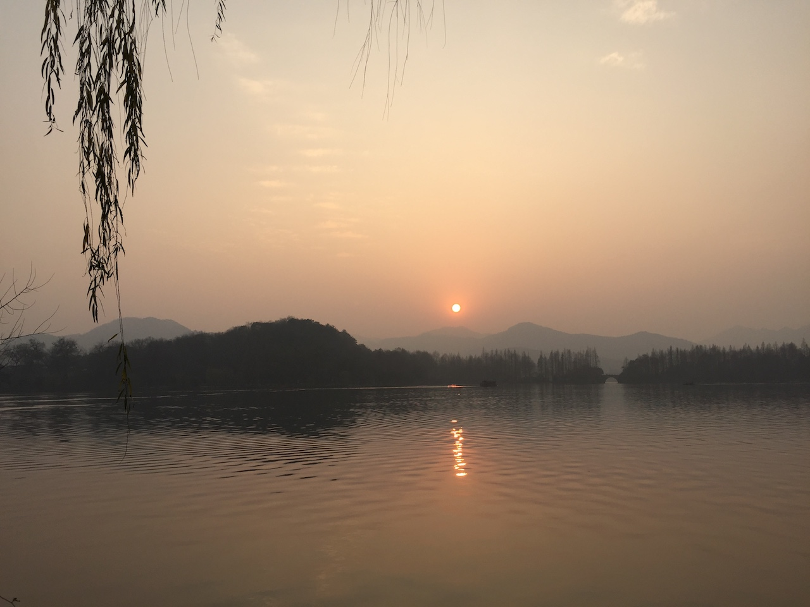
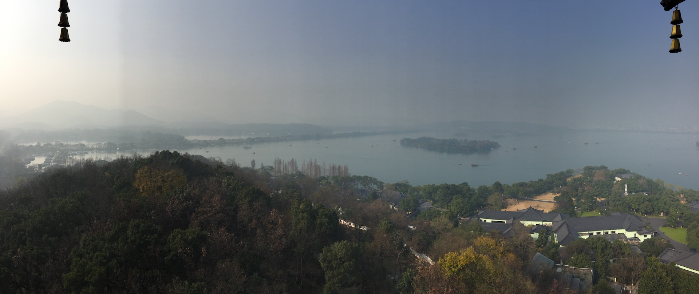
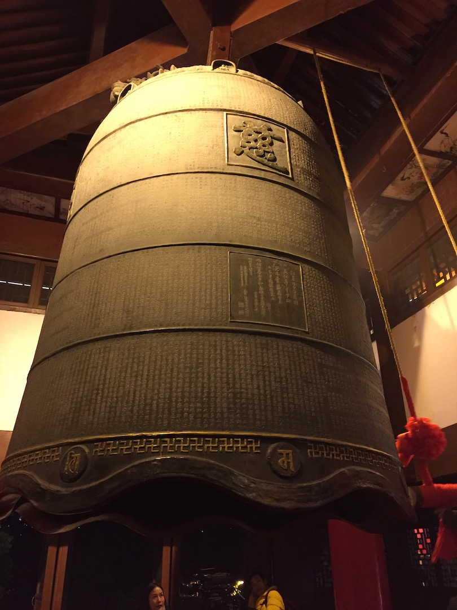
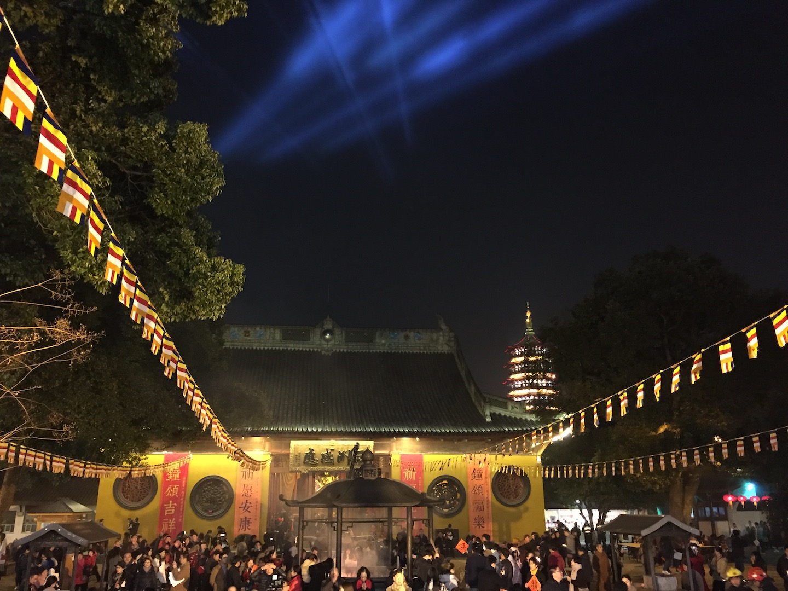
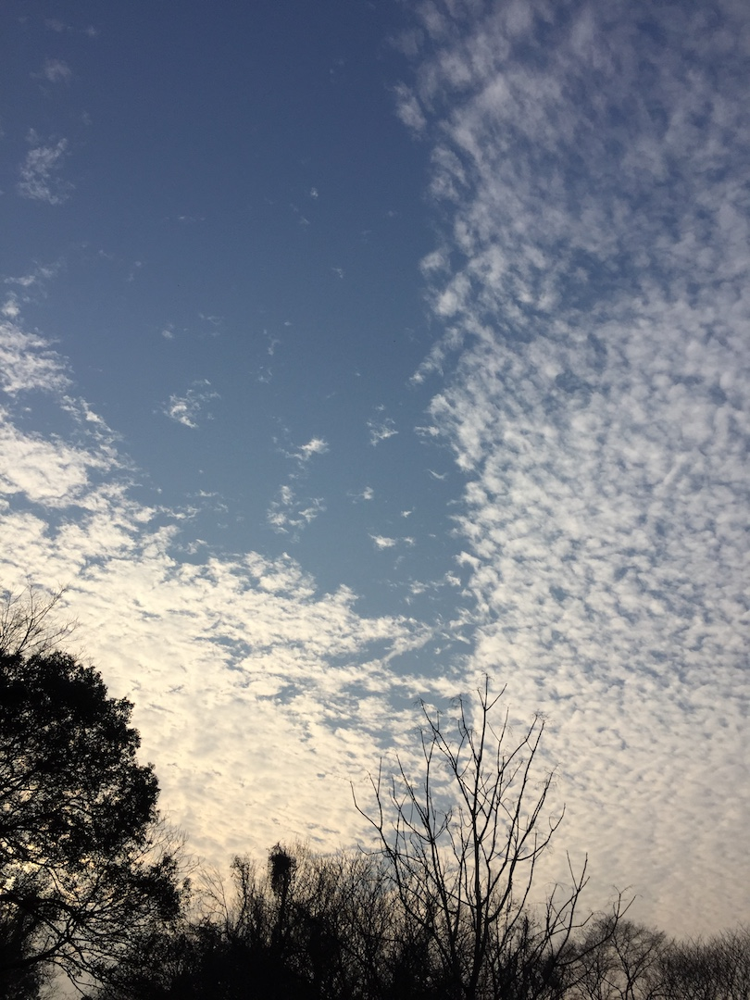
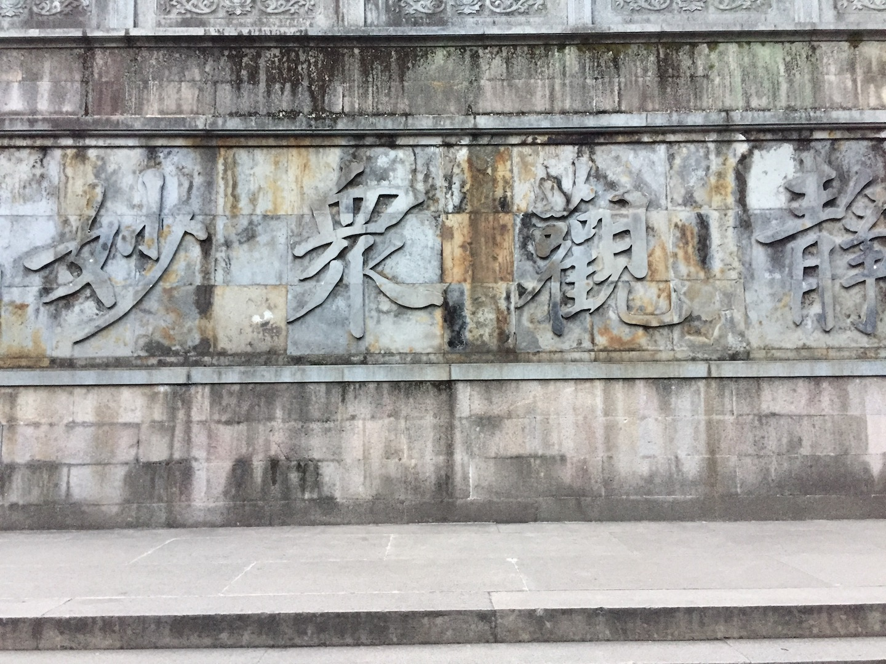
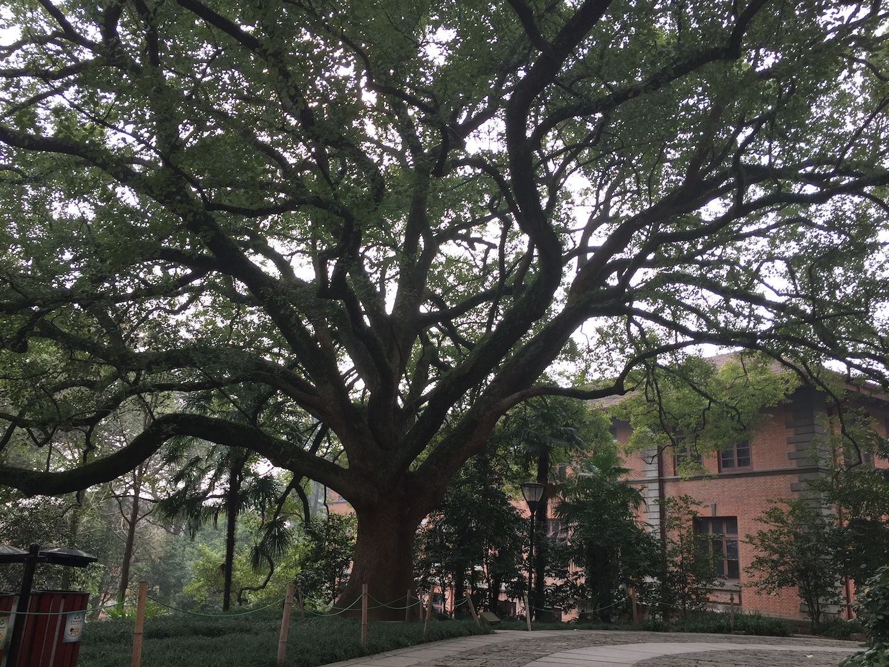
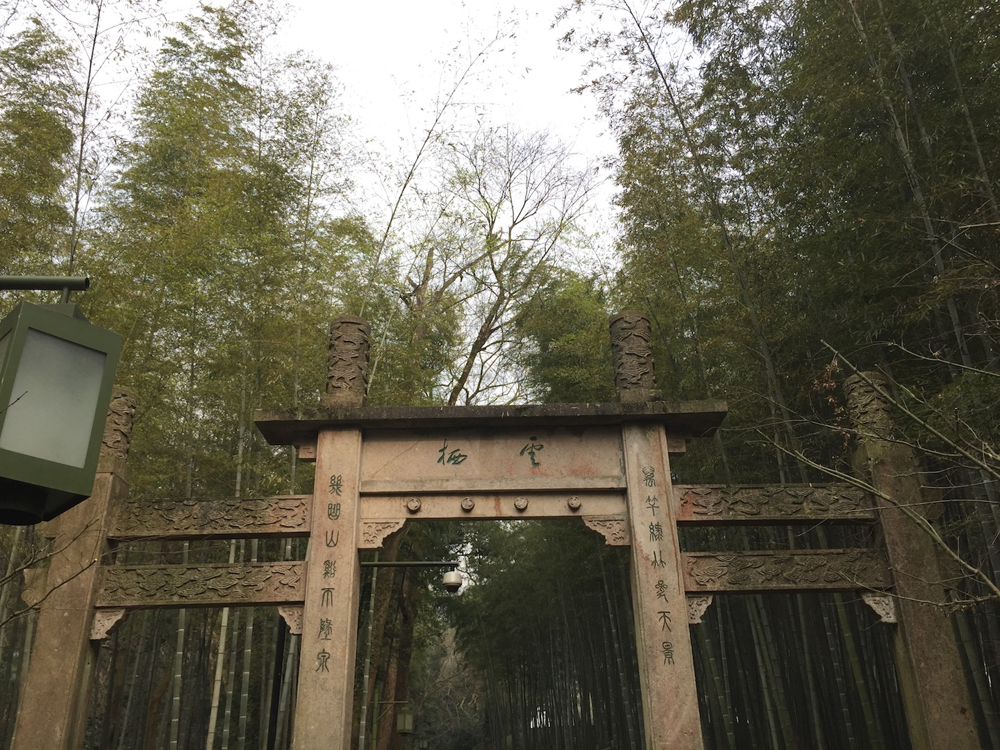

杭州
趁着元旦的假期，请了两天年假，去杭州玩了玩。
12.30
30号下午到的杭州。对杭州的第一印象很好，一下高铁，最深刻的印象就是路太干净了，根本看不到脏东西，也没有那么多灰尘，路上有着淡淡的湿意，后来才知道有洒水车定时洒水，然后清扫车清扫，还有环卫工人骑着电动自行车来回巡视，果然美好的环境需要更多的付出。而且，杭州人民似乎也更加注意保护公共卫生，害的我不好意思啐痰了。不过，这几天我鼻子也没有任何不舒服，在北京的时候室外呆不了多久就流鼻涕，不知道是空气质量好，还是空气比较湿润的原因。
某人之前订了一家民宿，叫做青茶，在虎跑路上。到了之后发现订的房间不太满意，又换到了阳面的一间。这家民宿挺不错的，各个房间主题不同，但都还比较文艺，房间也很干净。
放下行李后，就出发游西湖了。搭4路车，到苏堤下车，租了两俩自行车，开始骑行。杭州的自行车真是太发达了，不像北京随处可见的摩拜和ofo，杭州的自行车大部分是市政的公共自行车，而且第一个小时免费。而且不像摩拜这类的，租车和还车的地方是固定的地点，也避免了随处停车的乱象。
沿着苏堤一路向北，南方的树和青草此时尚存绿意，正值落日时分，景色很好。

苏堤、白堤骑完，继续向前骑了一段碰到一个换车点就还了车。附近找了个火锅吃了晚饭，就步行去看音乐喷泉了。看的人不少，进入的时候还要排队安检。喷泉还行，猛一看比较惊艳，后面看也没啥新鲜的。时间也不长，三首歌的长度。
看完喷泉后，去附近的商场买了条秋裤。。因为被某人忽悠说南方的冬天很阴冷，所以我穿着保暖内衣来的，压根没带薄的衣服。结果天气很好，相当于北京的秋天的温度，而且没有风，所以我穿那么厚快热死了。
12.31
早起在民宿吃了早饭。早饭很不错，种类很多，自助的形式，又不像酒店似的，都是家常的，就是吃完得自己刷碗。吃饭的时候还碰到了歪果仁，看样子也是来玩的。
今天依然是骑车环西湖游。骑车的好处是看到好玩的，随时停下来，锁上车就能去玩，玩完接着骑。
去看了雷峰塔。现在的雷峰塔是后来建的，老的已经塌了。新塔是在老塔之上建的，进入后还能看到老塔的遗址，被围了起来参观。虽然写着文物不要扔东西，然而还是被人扔满了硬币，看着亮闪闪的，也是无语。中国人似乎到哪儿都爱扔硬币，后面两天也是多次见到这一幕。
雷峰塔里说实话没啥好看的。登顶后，可以远眺西湖景色，这是唯一的可游玩的。不过当天天气不太好，有霾，看的不远。

雷峰塔看过后继续骑行，到了柳浪闻莺附近时还了车。柳浪闻莺就是个小公园，简单逛逛后，就坐船去三潭映月所在的湖中岛了。
三潭映月名气很大，也上过人民币的背景。不过看着也没啥，可能是时机不对。。。
不过某人对岛上10块钱3个的茶叶蛋赞不绝口。。
岛上有三个码头，可以去往西湖上的三个点。我们选了花港观鱼的船，主要是想去附近的知味观吃饭。
花港观鱼依然是个小公园，依然是简单逛逛，就去知味观了。西湖边的这家知味观价位比较高，不知道是不是旅游景点附近的原因，看点评上其他店价位要低不少。味道一般，没有期待中的那么好吃。
吃过饭后，就溜达着去净寺了。净寺在雷峰塔对面，西湖十景中的南屏晚钟就是这里。净寺今晚会有跨年的活动，游客晚上8点后可以排队敲钟祈福，敬香礼拜，更晚一些会有祈福的法会。我们到的比较早，就在售票的位置等待，后面人多了就渐渐排起了队。不过悲剧的是，售票的4个窗口只开了3个，而我们恰恰排在了不开的那一个。还是靠了某人的公关能力，让另一队的三位姑娘帮忙买了两张票。其实白天买的票晚上也能进，不用晚上再来买。
进门领了三支清香，一个福字，然后就去排队敲钟了。第一次敲钟挺好玩的，不当和尚也敲了钟~

净寺里热热闹闹的，有点庙会的意思。对面的雷峰塔在灯光的映衬下，显得十分梦幻。

1.1
早上没有起来，睡到中午才起。。
吃了早（午）饭后，打算去灵隐寺转转。灵隐寺离住的地方不远，大概四五公里，还是打算骑车去。一路上山路，上坡的时候累死了骑不动，下坡的时候呼啸而过爽的不行。路上还穿过了两个隧道，骑车过隧道，想想都牛逼，哈哈。
今天天气晴朗，十分适合户外活动。

灵隐寺比较坑，景区门票45，进寺再花30，人家叫香火钱。灵隐寺建筑很壮观，特别是大雄宝殿；不过商业气息比较重。

因为今天去的比较晚，从灵隐寺出来天色已经黑了，景区里就没有多逛，飞来峰都没有见到，十分遗憾。
1.2
今天换了家民宿，鸟山鸣。不是那个画漫画的，是一家以鸟为主题的民宿。
安顿好后去逛了浙江大学的之江校区。古老的校区，已经没有多少师生在这里。不过我很喜欢这个学校的自然环境，建筑都有年头了，依山势修建，各种小路蜿蜒相连，太有深山隐居的感觉了。

之后去了云栖竹径，一大片竹林，中间一条小径，据说卧虎藏龙也在这里取的景。云栖竹径的入口就在路边，从小路进入后就置身一片竹林之中，环境太舒服了。

想去看看财神，就选了条岔路走。结果是条登山道，越走越高，游玩变成了爬山。。到山顶后发现并不是终点，可以继续前行到龙井村、天竺，看看真际寺就返回了。
晚上特意去银泰吃的弄堂里，和外婆家、绿茶经常一起比较，性价比比较高，菜都不贵。就是等位吓人，拿个号前头快40桌，某人趁机还去煌上煌买吃的。。麻糍和梭子蟹炒年糕好评，北京也有，回头再去吃。
回去后逗了会儿猫，下了几盘五子棋，奈何棋艺不精。。
1.3
返京，中午11点44的高铁，基本一天全耗在路上了。